Data Analysis with R
7 - Data wrangling - 3.Transformation
Saskia A. Otto
Postdoctoral Researcher
3. Data transformation
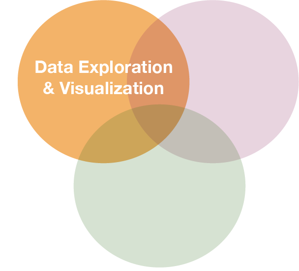

Before you start manipulating, ask yourself what do you want to explore?
What could be interesting questions for the oceanographic ICES data?
- Develop some questions yourself...
The first thing that should be checked before getting into the actual analysis of the oceanographic data is the data quality!
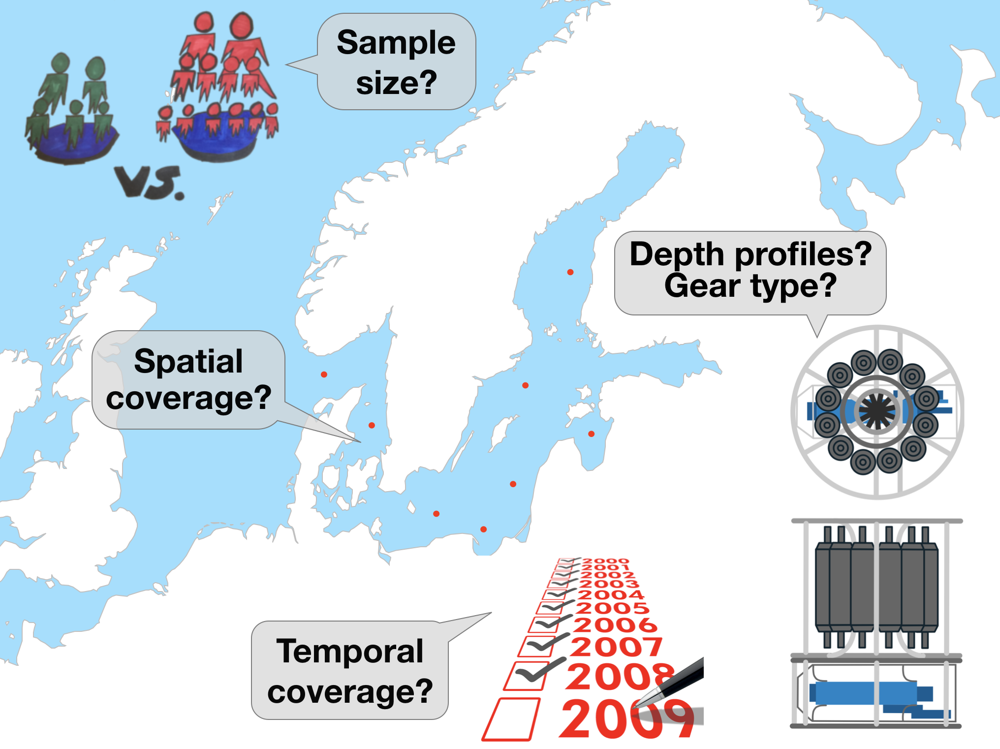
These questions require data aggregation
Aggregations can be done by
- gear type
- datasource
- spatially (e.g., per ICES subdivision or rectangle in this example)
- temporally (e.g., per year or month) → This requires some knowledge of handling dates and times!
Handling dates and times

Measurement of time is highly idiosyncratic
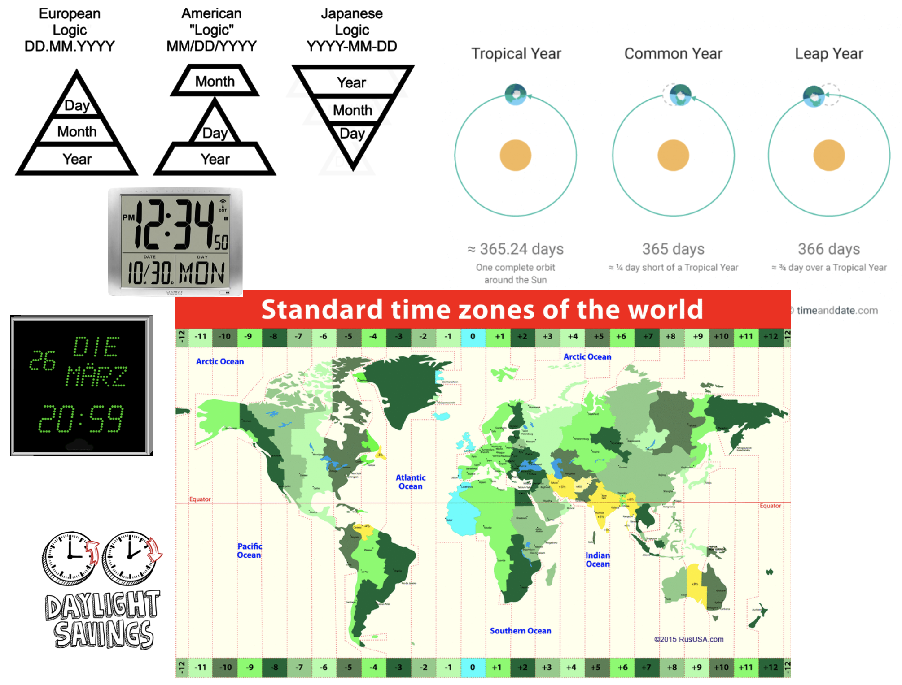
Measurement of time is highly idiosyncratic
Surprisingly difficult for computers!
Dates and times in R
To see how R handles dates and times, have a look at Sys.time():
Sys.time()
## [1] "2019-01-28 14:28:44 CET"
You see, first comes the year-month-day, then the time (h:m:s), and then the time zone. If you type
unclass(Sys.time())
## [1] 1548682125
You get the number of seconds since 1 January 1970.
Dates and times in R
- Two basic classes of date/times:
- POSIXlt
- POSIXct
- POSIXlt
- In tidyverse 3 types of date/time data that refer to an instant in time:
Dates and times in R
- Two basic classes of date/times:
- POSIXlt
- POSIXct
- POSIXlt
- in tidyverse 3 types of date/time data that refer to an instant in time:
- date: Tibbles print this as
<date>. - time within a day: Tibbles print this as
<time>. - date-time is a date plus a time: it uniquely identifies an instant in time (typically to the nearest second). Tibbles print this as
<dttm>.
Dates and times in R (cont)
- Many ways of writing the date and time → importing the correct date format and extracting parts can be tricky!
- Always use the simplest possible data type that works for your needs.
- One tidy way to import the correct date and time is with the
parse_functionsin the readr package → but it requires some knowledge on the specification of the date format you want to import.
The 'lubridate' package
- Makes it easier to work with dates and times.
- Handles a wide variaty of formats automatically.
- Is not part of the core tidyverse so it needs to be installed once and loaded additionally every time:.
install.packages("lubridate")
library(lubridate)
Create DATE objects from string
Depending on the order of the date components you have 3 functions to choose from:
ymd("2017-11-17") # YEAR-MONTH-DAY
## [1] "2017-11-17"
mdy("Nov 17th, 2017") # MONTH-DAY-YEAR
## [1] "2017-11-17"
dmy("17-Nov-2017") # DAY-MONTH-YEAR
## [1] "2017-11-17"
- Only the order matters! The format is not important as lubridate will automatically recognize it.
- You can apply the function to an entire vector.
Create DATE-TIME objects from strings
Simply combine ymd, mdy or dmy with
_hif you have only the hour_hmif you have hour and minute_hmsfor hour:min:sec
# Date with HOUR-MIN-SEC
ymd_hms("2017-11-17 12:11:59")
## [1] "2017-11-17 12:11:59 UTC"
# Date with HOUR-MIN
mdy_hm("11/17/2017 12:11")
## [1] "2017-11-17 12:11:00 UTC"
Create DATE-TIME objects from strings (cont)
If the time zone is not UTC (default) specify the tz argument
mdy_hm("11/17/2017 12:11", tz = "CET")
## [1] "2017-11-17 12:11:00 CET"
mdy_hm("11/17/2017 12:11", tz = "Europe/Helsinki")
## [1] "2017-11-17 12:11:00 EET"
CET = Central European Time, EET = Eastern European Time
Create DATE-TIME objects from individual components
If the date is split into different columns in your dataset you can combine them to a date object using make_date() or make_datetime():
make_date(year = 2017, month = 11, day = 15:17)
## [1] "2017-11-15" "2017-11-16" "2017-11-17"
Year and month get recycled to the same length as days.
Switch between date-time and date
You can switch between both formats with as_date() and as_datetime() (but you might loose information):
dt_utc <- mdy_hm("11/17/2017 12:11")
dt_utc
## [1] "2017-11-17 12:11:00 UTC"
d_utc <- as_date(dt_utc)
d_utc
## [1] "2017-11-17"
as_datetime(d_utc)
## [1] "2017-11-17 UTC"
Extract date components
For aggregation purposes its often useful to extract individual components. Lubridate has the following helper functions (all have simply the name of the component you want to extract):
year()month()mday()- day of the monthyday()- day of the yearwday()- day of the weekhour(),minute(),second()
dt_utc <- mdy_hm("11/17/2017 12:11")
year(dt_utc)
## [1] 2017
yday(dt_utc)
## [1] 321
Handling time periods, intervals
Lubridate offers many more functions that deal with dates and times such as
%--%creates intervals- and
as.duration()calculates the duration of this interval
(day_int <- dmy("10/11/2017") %--% dmy("17/11/2017") )
## [1] 2017-11-10 UTC--2017-11-17 UTC
as.duration(day_int)
## [1] "604800s (~1 weeks)"
To learn more on functions offered by lubridate read the vignette or chapter 16 in R for Data Science.
Your turn...
Import the following dataset
library(tidyverse)
date_ex <- read_csv("data/date_time_examples.csv")
print(date_ex, n = 5)
## # A tibble: 10 x 8
## date1 date2 date3 sampling_start_CET sampling_end_UTC year month
## <chr> <chr> <chr> <dttm> <dttm> <int> <int>
## 1 11-0… 8.11… 8 No… 2017-11-08 09:54:00 2017-11-08 10:40:00 2017 11
## 2 11-0… 9.11… 9 No… 2017-11-09 08:15:00 2017-11-09 09:07:00 2017 11
## 3 11-1… 10.1… 10 N… 2017-11-10 08:06:00 2017-11-10 09:09:00 2017 11
## 4 11-1… 11.1… 11 N… 2017-11-11 10:37:00 2017-11-11 11:59:00 2017 11
## 5 11-1… 12.1… 12 N… 2017-11-12 08:21:00 2017-11-12 09:02:00 2017 11
## # ... with 5 more rows, and 1 more variable: day <int>
Quiz 1: Handling dates
Which of the variables have been correctly parsed as dates?
- date1
- date2
- date3
- sampling_start_CET
- sampling_end_UTC
- year
- month
- day
Quiz 2: Handling dates
Convert variables date1, date2, and date3 into the date format.
Which are the correct functions for each date format?
Do they look the same after conversion?
Quiz 3: Handling dates
Create a new date variable by combining the year, month, and day variables.
Quiz 4 - Challenge: Handling dates and times
A video plankton recorder (VPR) was towed along a transect in the Skagerrak (North of Denmark) from East to West on several subsequent days. The starting and ending time of the tow were recorded each time (col 4 and 5). Can you tell me for how long the VPR was towed at the following sampling dates (in min)?
- 2017-11-08
- 2017-11-14
- 2017-11-15
You can do simple calculations also with date objects or use some of the functions just presented.
Once date and time variable have the correct datetime format (including the time zone), you can simply substract the start time from the end time
date_ex$sampling_end_UTC - date_ex$sampling_start_CET and R will account for the time difference in case time zones differ.
Alternatively, use the lubridate functions %--% and as.duration() then as.numeric(.., "minutes") to convert to the unit minutes (see examples in ?as.duration):
tow_period <- date_ex$sampling_end_UTC %--% date_ex$sampling_start_CET
as.numeric(as.duration(tow_period), "minutes")[c(1,7,8)]
46
81
65
Exercise: Date-time in the ICES hydrographical data
As preparation for the following data manipulation, import the ICES data, change the variable names, and check the date-time variable. Was the format correctly parsed? (Don't forget to set the working directory beforehand!)
hydro <- read_csv("data/1111473b.csv")
# Change names to e.g.
names(hydro) <- c("cruise", "station", "type", "date_time",
"lat", "long", "depth", "pres", "temp", "psal", "doxy")
Create 3 new columns that contain the
- year
- month
- day
Data transformation with 'dplyr'
The 'dplyr' package
Makes data manipulation easier and faster
| Typical manipulations | Core functions in dplyr |
|---|---|
| Manipulate observations (rows) | filter(), arrange() |
| Manipulate variables (columns) | select() |
| Summarise observations | summarise() |
| Group observations | group_by(), ungroup() |
| Combine tables | bind_ and join_ functions |
The 'dplyr' package (cont)
Function structure
- First argument is always a data frame or tibble
- Subsequent arguments say what to do with data frame
- Always return a data frame
A demonstration with growth information for 5 fish species

fish_growth <- tibble(
Species = c("Gadus morhua", "Platichthys flesus", "Pleuronectes platessa",
"Merlangius merlangus", "Merluccius merluccius"),
Linf = c(110, 40.8, 54.4, 41.3, 81.7),
K = c(0.4, 0.4, 0.1, 0.2, 0.1)
)
(Linf = average maximum length, K = rate at which the fish approaches Linf)
Image courtesy of the photographers at fishbase.org (Konstantinos I. Stergiou, Jim Greenfield) and uwphoto.com (Rudolf Svensen).
filter() → extract rows that meet logical criteria
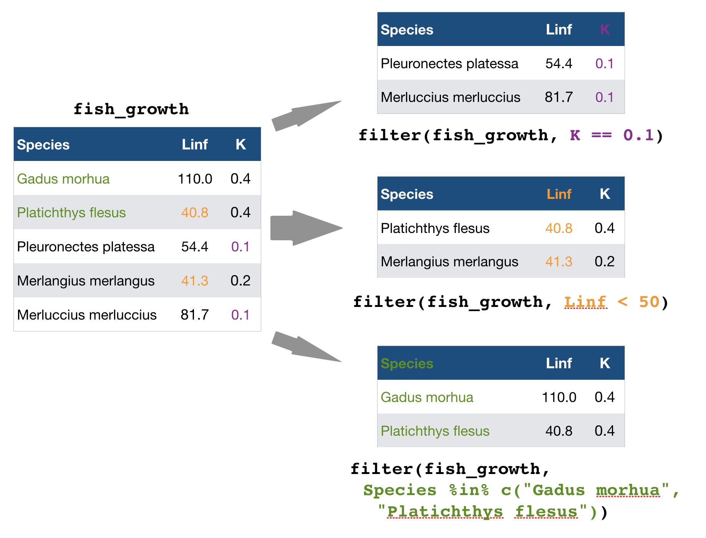
Some other helpful functions to ...
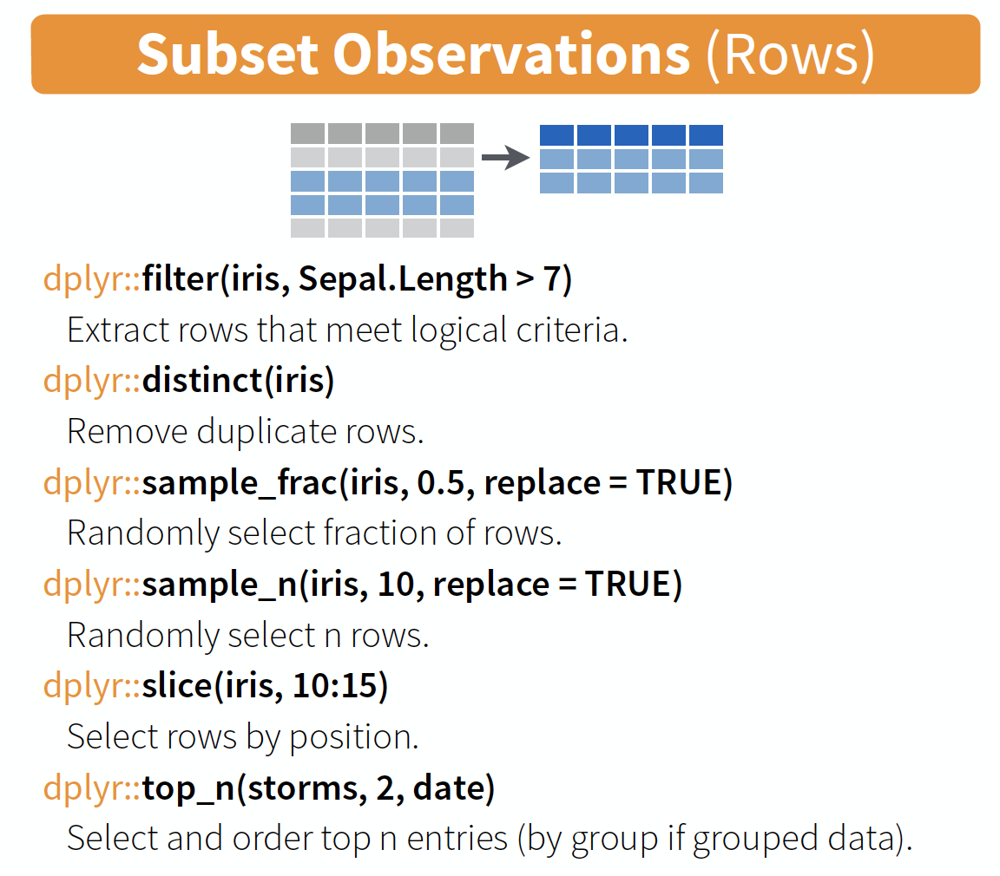
source: older version of Data Transformation with dplyr cheat sheet (licensed under CC-BY-SA)
arrange() → sort observations by specific variables
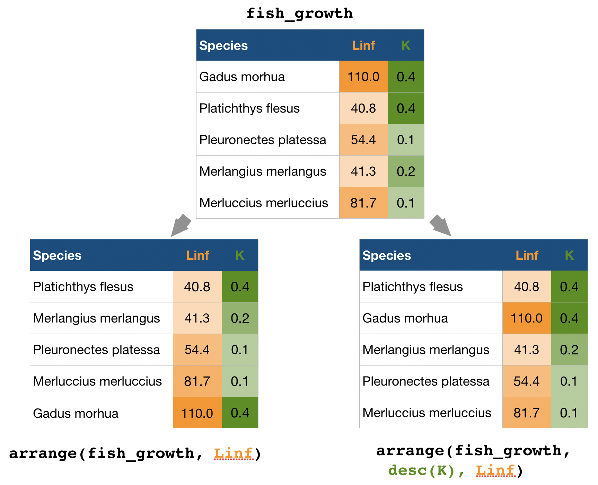
select() → extract columns by name or helper function
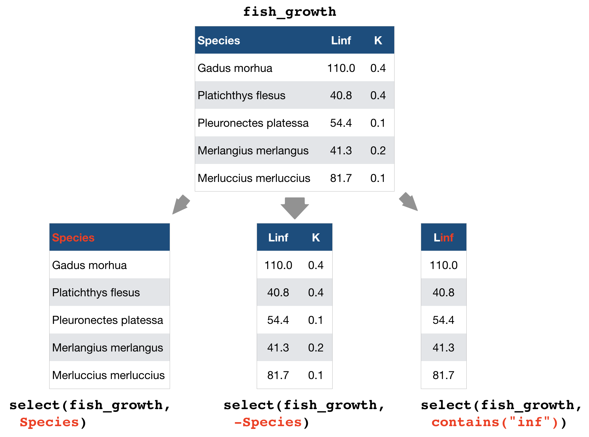
Overview of helper functions

source: older version of Data Transformation with dplyr cheat sheet (licensed under CC-BY-SA)
mutate() and transmute() → create new variables
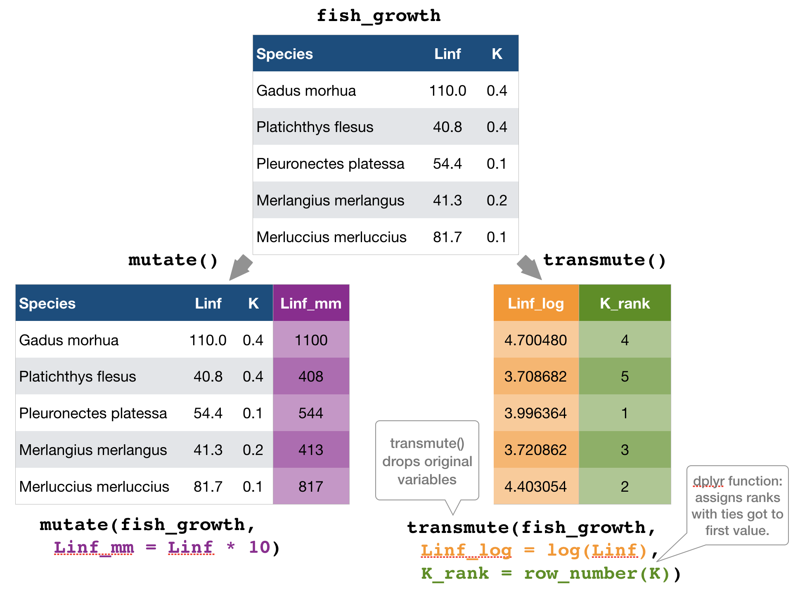
mutate() and transmute()
You can do any calculation with a variable or apply a so-called window function:

source: older version of Data Transformation with dplyr cheat sheet (licensed under CC-BY-SA)
You can do any calculation with a variable as long as it is vectorized. Useful functions are:

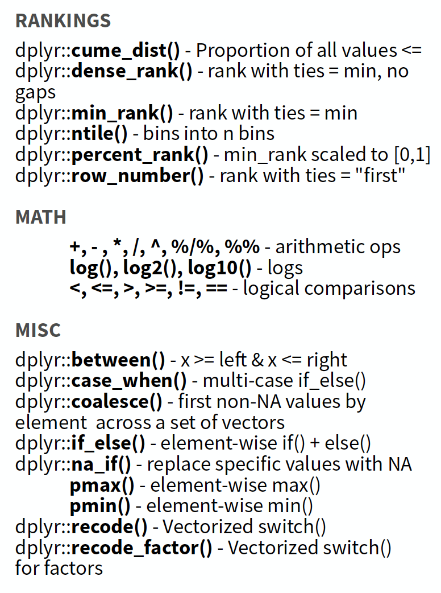
source: older version of Data Transformation with dplyr cheat sheet (licensed under CC-BY-SA)
summarise() → reduce variables to values
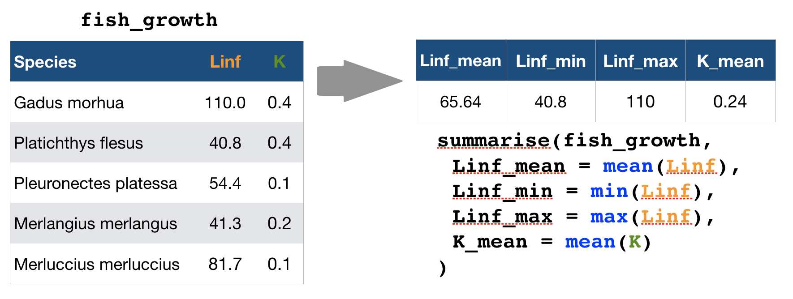
Useful summary functions

source: older version of Data Transformation with dplyr cheat sheet (licensed under CC-BY-SA)
Your turn...
Import the oceanographic ICES dataset
If you haven't done it before in the date handling section do it now (don't forget to set the working directory beforehand!):
hydro <- read_csv("data/1111473b.csv")
names(hydro) <- c("cruise", "station", "type",
"date_time", "lat", "long", "depth",
"pres", "temp", "psal", "doxy")
Extract from the date_time variable the year, month, and day and save them in separate variables.
Quiz 5: Data manipulation
- Create a subset by filtering month 7 and pres 1.
- Select from this subset only the cruise, station, and day variables.
- Arrange this subset now by day, then by station, and then by cruise.
Questions (solution code will be at the end of the presentation):
- How many stations were sampled on day 2?
- And how many cruises sampled these stations?
Once you have filtered, selected and arranged your subset, print it in the console or use View(your_subset).
6
2
Quiz 6: Data manipulation
Lets try a different approach to a similar question (code is at the end of slides):
- Create a subset by filtering month 2, day 4, and pres 1.
- Select from this subset only the cruise and station variables (this step could also be skipped).
- Summarise the cruise and station variables by calculating the number of unique values:
n_distinct().
- How many stations were sampled on day 4?
- And how many cruises sampled these stations?
8
2
Well done! You managed to calculate the number of sampled stations and cruises for a single day! But what about all the other days?
Devise a strategy for all days or months!
Try to get something like this
## # A tibble: 223 x 4
## month day cruise_count station_count
## <dbl> <int> <int> <int>
## 1 1 12 2 4
## 2 1 13 1 2
## 3 1 14 1 2
## 4 1 15 1 1
## 5 1 19 3 9
## 6 1 20 3 7
## 7 1 21 3 5
## # ... with 216 more rows
You get 2 minutes to think of a strategy ...
Solution for group-wise operations:
group_by()takes an existing tbl and converts it into a grouped tbl where operations are performed "by group"ungroup()removes grouping
Principle of group-wise operations
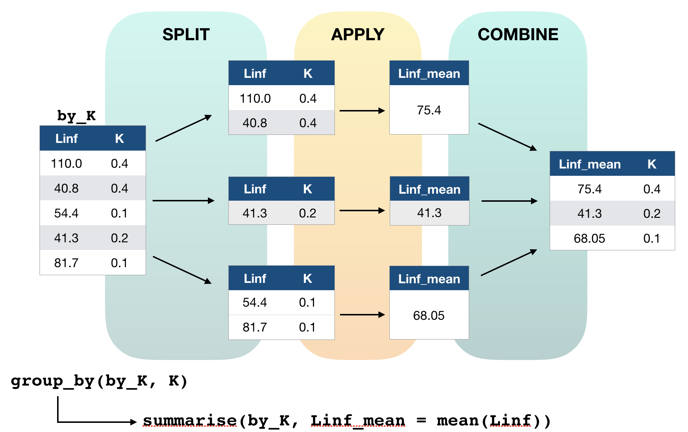
dplyr offers many more functions!
From now on you should constantly look into the cheat sheet:
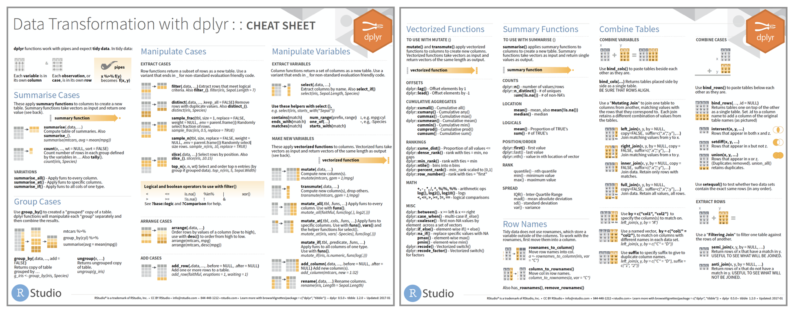
Cheat sheet is freely available at https://www.rstudio.com/resources/cheatsheets/
Before you can practice your data manipulation skills you will get to know one very usefool tool for more complex operations!!!
The pipe operator
Basic piping with %>%
- The so-called pipe-operator is provided by the magritr package.
- Is part of the core tidyverse so you only need to install 'tidyverse' or any of the tidyverse core packages.
- Simplifies operations!
- Imagine taking the square root of the sums of squares of a data subset in one step:
Basic piping with %>%
- The so-called pipe-operator is provided by the magritr package.
- Is part of the core tidyverse so you only need to install 'tidyverse' or any of the tidyverse core packages.
- Simplifies operations!
- Imagine taking the square root of the sums of squares of a data subset in one step:
sqrt(sum( (hydro$temp[hydro$station == "0010" & hydro$pres %in% c(1,5,10)] -
mean(hydro$temp[hydro$station == "0010" & hydro$pres %in% c(1,5,10)]))^2))
Does that look simple and readable?
With %>% you can couple several function calls sequentially without creating many intermediate objects:
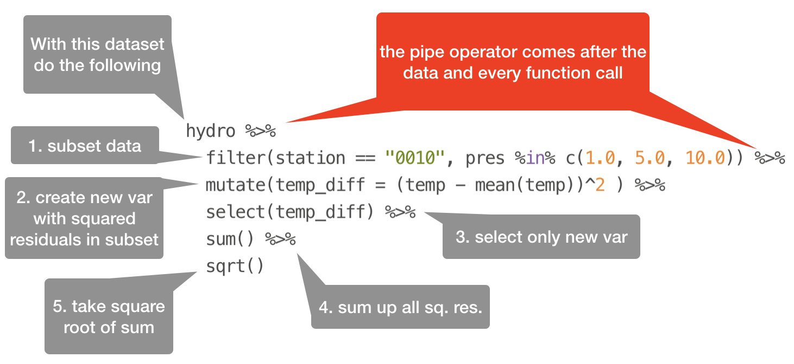
%>%pipes left-hand side values forward into expressions that appear on the right-hand side.- Additional steps can be easily added anywhere in the sequence of operations.
Your turn...
Tell me ...
- Which dplyr function can you use to remove duplicated row values?
- And which dplyr function(s) can you use to count the number of rows in each variable group?
→ These functions can be helpful in the next data manipulation exercises!
More complex data manipulations
With the group_by() function and the pipe operator you will be able to answer the following questions (choose at least 3 questions):
1. On average, how many stations were sampled per month during 2015?
2. Which stations were sampled more than 3 times per month?
3. How many days took the sampling place in each month?
4. Do you see any temporal gap during the year where no sampling took place?
5. Which depths are most frequently sampled?
6. What are the most common depth profiles taken? (Every 1 metre, every 5 metres?)
7. Are the NAs in the dataset related to specific months or cruises?
What else could be relevant in terms of data quality?
(the solution code is at the end of the presentation)
Overview of functions you learned today
base: Sys.time(), unclass(Sys.time())
lubridate: ymd, mdy, dmy, ymd_hms, mdy_hm
make_date, as_date(), as_datetime()
year(), month(), mday(), yday(), wday(), hour(), minute(), second(), %—%, as.duration()
dplyr: filter(), arrange(), select(), mutate() and transmute(), summarise(), group_by(), ungroup()
magrittr: %>%
How do you feel now.....?
Totally confused?

Tr out ALL the exercises and compare your code and results with the solution code! Read chapter 5 on data transformation, chapter 16 on dates and times, and chapter 18 on the pipe operator 'in R for Data Science'.
Totally bored?

Then play around with the full hydro dataset "1111473b.csv" and explore already the hydrographical variables.
Totally content?
Then go grab a coffee, lean back and enjoy the rest of the day...!

Thank You
For more information contact me: saskia.otto@uni-hamburg.de
http://www.researchgate.net/profile/Saskia_Otto
http://www.github.com/saskiaotto

This work is licensed under a
Creative Commons Attribution-ShareAlike 4.0 International License except for the
borrowed and mentioned with proper source: statements.
Image on title and end slide: Section of an infrared satallite image showing the Larsen C
ice shelf on the Antarctic
Peninsula - USGS/NASA Landsat:
A Crack of Light in the Polar Dark, Landsat 8 - TIRS, June 17, 2017
(under CC0 license)
Solutions
Quiz 5: Data manipulation
h_filt <- filter(hydro, month == 7, pres == 1)
h_sel <- select(h_filt, cruise,station, day)
h_arr <- arrange(h_sel, day, station, cruise)
# View(h_arr) or filter by day
out <- filter(h_sel, day == 2)
out
## # A tibble: 6 x 3
## cruise station day
## <chr> <chr> <int>
## 1 3490 0093 2
## 2 3490 0257 2
## 3 3490 0229 2
## 4 ESLV 012c 2
## 5 ESLV 0038 2
## 6 ESLV 00N8 2
Using the pipe operator:
hydro %>%
filter(month == 7, pres == 1) %>%
select(cruise, station, day) %>%
arrange(day, station, cruise) %>%
filter(day == 2)
Quiz 6: Data manipulation
h_filt <- filter(hydro, month == 2, day == 4, pres == 1)
summarise(h_filt, cruise_nr = n_distinct(cruise),
station_nr = n_distinct(station) )
## # A tibble: 1 x 2
## cruise_nr station_nr
## <int> <int>
## 1 2 8
Using the pipe operator:
hydro %>%
filter(month == 2, day == 4, pres == 1) %>%
summarise(cruise_count = n_distinct(cruise),
station_count = n_distinct(station) )
Complex data manipulations - Question 1
On average, how many stations were sampled per month during 2015?
You want the number of sampled stations per month before you can calculate the mean. This could be done by counting the number of rows with different station values per month. Problem: The data consists of double entries (duplicated station values) due to the different sampling depths (and maybe the station was sampled more than once at the same day during the cruise). So first remove double entries by using the distinct() function!
Complex data manipulations - Question 1 (cont)
On average, how many stations were sampled per month during 2015?
hydro %>%
select(station, month) %>%
# to remove duplicates
distinct() %>%
group_by(month) %>%
count() %>%
ungroup() %>%
summarise(stat_per_month = mean(n))
## # A tibble: 1 x 1
## stat_per_month
## <dbl>
## 1 210.
As we are only interested in stations per month and not in double entries, etc.,
- both variables are first selected
- and then duplicated entries removed.
- The dataset is grouped by month,
- number of rows per month (= the stations) calculated and
- the mean across months computed.
Complex data manipulations - Question 2
Which stations were sampled more than 3 times per month?
hydro %>%
select(station,date_time,month) %>%
distinct() %>%
group_by(month, station) %>%
count() %>%
filter(n > 3)
- date_time is kept in to indicate the nr of samplings at this station per month
- instead of count() you can also use summarise(n = length(station)) or summarise(n = n())
## # A tibble: 9 x 3
## # Groups: month, station [9]
## month station n
## <dbl> <chr> <int>
## 1 3 0001 4
## 2 3 0021 4
## 3 3 0023 4
## 4 3 0025 4
## 5 3 0027 4
## 6 3 0029 4
## 7 4 0002 4
## 8 4 0003 5
## 9 6 0038 4
Complex data manipulations - Question 3
How many days took the sampling place in each month?
What are you interested in here? In day and month, so select only those 2 variables, remove duplicated rows, group by month so that you can count the number of rows with different day values:
hydro %>%
select(month, day) %>%
distinct() %>%
group_by(month) %>%
summarise(n = n()) # or count()
## # A tibble: 12 x 2
## month n
## <dbl> <int>
## 1 1 19
## 2 2 26
## 3 3 31
## 4 4 17
## 5 5 24
## 6 6 26
## 7 7 25
## 8 8 25
## 9 9 28
## 10 10 29
## 11 11 27
## 12 12 13
Complex data manipulations - Question 4
Do you see any temporal gap during the year where no sampling took place?
This is a question were you can play around with various other functions. No approach will be the correct one. Here is one solution where the julian days are computed with the lubridate function yday() and the difference between successive julian days then calculated:
hydro %>%
mutate(julian_day = lubridate::yday(date_time)) %>%
select(julian_day, month) %>%
distinct() %>%
arrange(julian_day) %>%
mutate( timegap = c(NA, diff(julian_day)) ) %>%
group_by(month) %>%
filter(timegap > 3)
Complex data manipulations - Question 4 (cont)
Do you see any temporal gap during the year where no sampling took place?
## # A tibble: 8 x 3
## # Groups: month [6]
## julian_day month timegap
## <dbl> <dbl> <dbl>
## 1 19 1 4
## 2 97 4 6
## 3 103 4 4
## 4 110 4 4
## 5 124 5 6
## 6 180 6 4
## 7 306 11 4
## 8 341 12 4
So mainly April shows the greatest gaps (with a gap of 6 days, and twice of 4 days). Why could that be?
Complex data manipulations - Question 5 and 6
Which depths are most frequently sampled? What are the most common depth profiles taken? (Every 1 metre, every 5 metres?)
hydro %>%
select(pres) %>%
group_by(pres) %>%
count() %>%
arrange(desc(n)) %>% print(n=3)
## # A tibble: 1,193 x 2
## # Groups: pres [1,193]
## pres n
## <dbl> <int>
## 1 5 2319
## 2 10 2215
## 3 20 1792
## # ... with 1,190 more rows
If you got the same result you probably noted, that the depth (or pres) values are not integers and the number of unique values is there fore very high (1,193). To reduce the numer of depth levels we could round them first. Instead of using the function round() I suggest using ceiling(), which rounds to the next higher integer (so that 0.4m is considered 1m):
Complex data manipulations - Q5 and 6 (cont)
Which depths are most frequently sampled? What are the most common depth profiles taken? (Every 1 metre, every 5 metres?)
hydro %>%
transmute(pres2 = ceiling(pres)) %>%
group_by(pres2) %>%
count() %>%
arrange(desc(n)) %>% print(n=3)
## # A tibble: 216 x 2
## # Groups: pres2 [216]
## pres2 n
## <dbl> <int>
## 1 5 2370
## 2 10 2232
## 3 1 1880
## # ... with 213 more rows
- Q5: The depths most often sampled are 5m, 10m, and 1m.
- Q6: From 0 to 30m depth samples were mostly taken in 5m intervals (1, 5, 10, 15, 20, 25, 30m) depth and afterwards mostly in 10m intervals.
Complex data manipulations - Question 7
Are the NAs in the dataset related to specific months or cruises?
Check if related to months
hydro %>%
select(month, temp, psal, doxy) %>%
group_by(month) %>%
summarise(
t_na = sum(is.na(temp)),
s_na = sum(is.na(psal)),
o_na = sum(is.na(doxy))
) %>%
mutate(sum_na = t_na+s_na+o_na) %>%
arrange(desc(sum_na))
## # A tibble: 12 x 5
## month t_na s_na o_na sum_na
## <dbl> <int> <int> <int> <int>
## 1 10 184 234 1115 1533
## 2 8 310 413 630 1353
## 3 3 115 108 854 1077
## 4 6 155 267 649 1071
## 5 9 123 232 619 974
## 6 7 239 357 372 968
## 7 2 47 82 798 927
## 8 11 46 83 764 893
## 9 5 235 311 330 876
## 10 4 177 200 375 752
## 11 1 73 85 549 707
## 12 12 10 10 249 269
Complex data manipulations - Question 7 (cont)
Are the NAs in the dataset related to specific months or cruises?
Check if related to cruises
hydro %>%
select(cruise, temp, psal, doxy) %>%
group_by(cruise) %>%
summarise(
t_na = sum(is.na(temp)),
s_na = sum(is.na(psal)),
o_na = sum(is.na(doxy))
) %>%
mutate(sum_na = t_na+s_na+o_na) %>%
arrange(desc(sum_na))
## # A tibble: 36 x 5
## cruise t_na s_na o_na sum_na
## <chr> <int> <int> <int> <int>
## 1 67BC 127 147 2300 2574
## 2 ESSA 729 729 243 1701
## 3 3490 194 706 488 1388
## 4 26DA 0 2 1234 1236
## 5 34AR 17 17 1160 1194
## 6 77FY 39 0 490 529
## 7 67LL 92 272 92 456
## 8 ESLV 145 145 151 441
## 9 77K9 4 3 285 292
## 10 ESQT 59 59 89 207
## # ... with 26 more rows
Complex data manipulations - Question 7 (cont)
Are the NAs in the dataset related to specific months or cruises?
- NAs are most common in October and August but there is no clear seasonal pattern in the occurrence of NAs.
- Certain cruises provided data to ICES with many more missing values.
- The NAs are mainly related to specific cruises, with the highest number of NAs found for oxygen.
- It might be smart to go into the original data and check for those cruises if NAs occur only for specific depths.
hydro %>%
filter(month==2,cruise=="67BC") %>%
View()
→ at this cruise doxy was only taken in 10m depth intervals not in 5m as for temp and psal